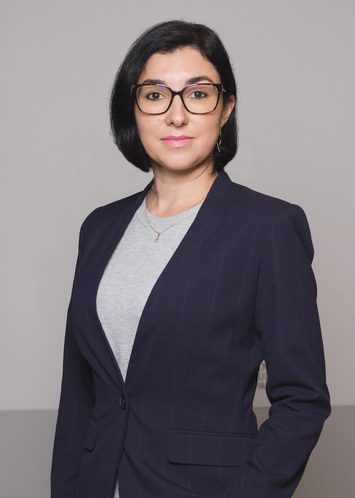

VISUAL MOCKUP · Demonstration only
Marina Costa
Oncology nursing and patient navigation
The following names, portraits and profiles are fictional, created only to demonstrate the faculty layout.

Nurse with postdoctoral training at the University of São Paulo School of Medicine and a doctorate and master’s degree in Nursing from USP, with specialization in oncology nursing. The name, photo and biography were supplied in the course briefing.
Lattes →Oncology nursing and patient navigation
The following names, portraits and profiles are fictional, created only to demonstrate the faculty layout.
Patient safety and clinical communication
The following names, portraits and profiles are fictional, created only to demonstrate the faculty layout.
Management, evidence and digital health
The following names, portraits and profiles are fictional, created only to demonstrate the faculty layout.